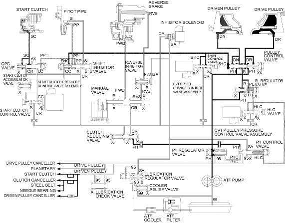

Position, when an electronic control system breakdown occurs.
Position, when an electronic control system breakdown occurs.
Honda Multi Matic Transmission/CVT
|
14-286 |
Hydraulic Flow (cont'd)
Position, when an electronic control system breakdown occurs.
The manual valve is shifted in the position and uncovers the port leading reverse brake pressure (RVS) to the reverse inhibitor valve. All solenoids and sensors are off because of an electronic control system breakdown the inhibitor solenoid is faulty OFF and SH-A pressure (SA) is applied to the right end of the reverse inhibitor valve. The reverse inhibitor valve is moved to the left side and uncovers the port leading reverse brake pressure (RVS') to the reverse brake. The reverse brake pressure (RVS) flows to the reverse brake and the reverse brake is engaged to drive in reverse. The shift inhibitor valve is moved by the electronic control system breakdown to left side and uncovers the port leading shift inhibitor pressure (SI) to the pitot lubrication pipe. The pitot lubrication pipe discharges fluid inside of the pitot flange and discharged fluid enters into the pitot pipe and it is applied to the right end of the CPC valve via the shift inhibitor valve. The pitot pressure (PP) is increased, the CPC valve is moved to left side and the start clutch pressure (SC) is increased. The start clutch pressure (SC) is applied to the start clutch and the start clutch is engaged. At this time, the drive pulley receives high pressure and the driven pulley receives low pressure, the pulley ration is in high.
NOTE: When used, ''left'' or ''right'' indicates direction on the hydraulic circuit.
